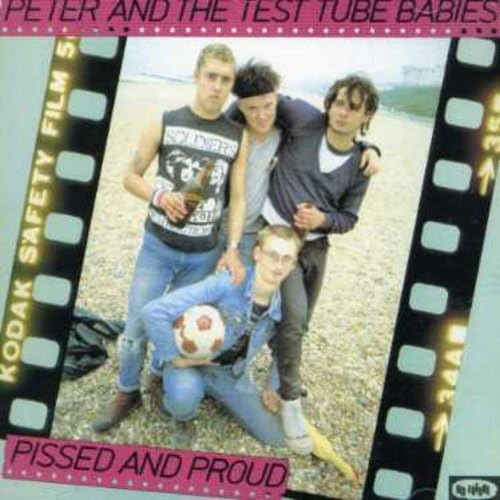

ＰＥＴＥＲ ＡＮＤ ＴＨＥ ＴＥＳＴ ＴＵＢＥＢＡＢＩＥＳ
７８年に結成されたパンクバンド

●タイトル
Pissed & Proud
●コメント
ライブ音源でインディーズチャートで一位を取ったらしい。 Ｏｉでもなく、ハードコアでもなく、でも両方を兼ねそなえたパンクバンドでしょうか！ 70sパンクの要素と80sパンクの中間的！ 聴きやすく、ＰＯＰではじけて、力強さも感じられ、案外早い。 耳に残りやすい曲が多いです。PETERの言う新しいものを求める心と熱いスピリットが感じられます！！！！